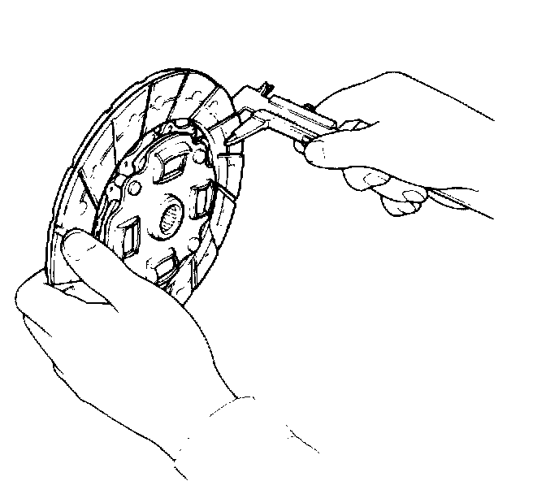
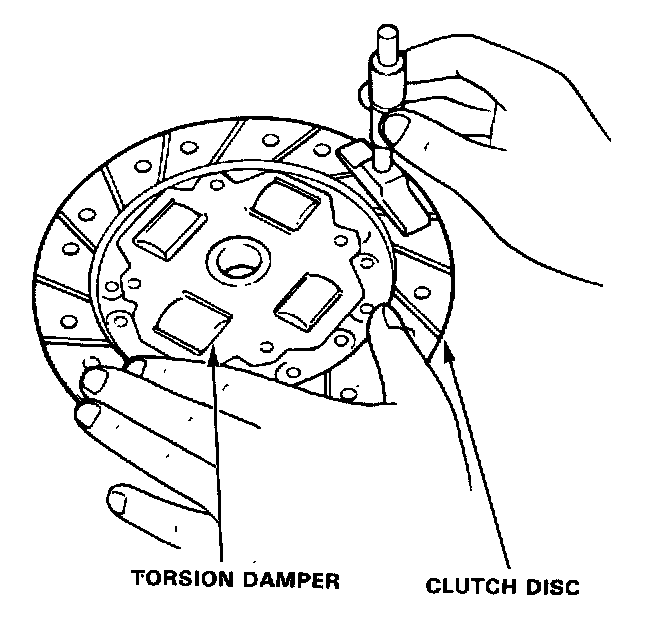

Clutch Disc: Testing and Inspection
Inspection1. Inspect the lining of the clutch disc for signs of slipping or oil. Replace it if it is burned black or oil soaked.

2. Measure the clutch disc thickness.
Clutch Disc Thickness:
Standard (New): 8.49.1 mm (0.331-0.358 in.)
Service Limit: 6.0 mm (0.236 in.)
3. Check for loose rubber torsion dampers. Replace the clutch disc if any are loose.

4. Measure the depth from the lining surface to the rivets, on both sides.
Rivet Depth:
Standard (New): 1.3 mm (0.051 in.) mm.
Service Limit: 0.2 mm (0.008 in.)